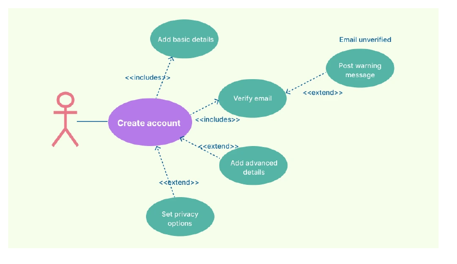
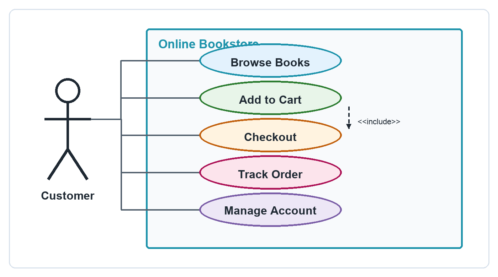
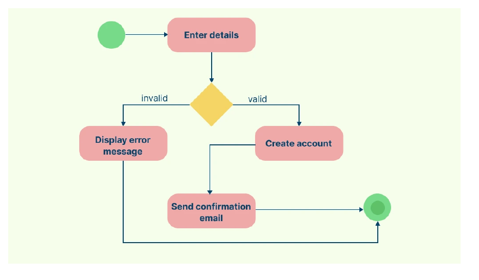
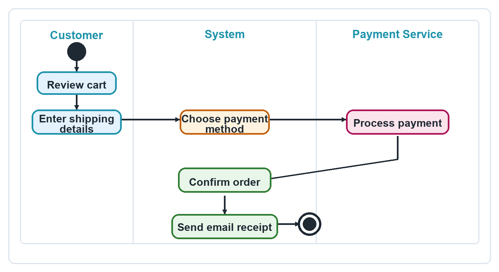

Trường ĐH Công nghệ - Đại học Quốc gia Hà Nội
Giảng viên: Trịnh Ngọc Huỳnh
| Câu hỏi thiết kế | Biểu đồ phù hợp | Điều cần nhìn thấy |
|---|---|---|
| Hệ thống cần làm gì cho người dùng? | Use Case Diagram | Actor, use case, system boundary. |
| Một quy trình chạy từng bước như thế nào? | Activity Diagram | Action, decision, flow, start/end. |
| Một actor đạt mục tiêu bằng những bước nào? | Kết hợp cả hai | Use case chính, rồi activity cho use case đó. |
Online Shopping cho thấy actor, system boundary và các mục tiêu như View Items, Make Purchase, Checkout.
Online Shopping Activity cho thấy search/browse, view item, cart update và checkout.
Sequence Diagram là bước thiết kế chi tiết tiếp theo khi đã rõ use case và activity.
| Thành phần | Mô tả | Ký hiệu |
|---|---|---|
| Actor | Người dùng hoặc hệ thống ngoài tương tác với hệ thống. | Hình người |
| Use Case | Chức năng hệ thống cung cấp. | Hình elip |
| System boundary | Ranh giới hệ thống đang xét. | Hình chữ nhật |
| Association | Liên kết actor với use case hoặc mô tả quan hệ giữa use case. | Đường thẳng |
| Include | Use case luôn gọi một use case khác. | <<include>> |
| Extend | Use case mở rộng trong điều kiện nhất định. | <<extend>> |
Use case diagram chỉ nói mục tiêu và phạm vi, chưa nói chi tiết xử lý.


Đây là gợi ý đọc bài toán, không phải đáp án duy nhất.
| Thành phần | Mô tả | Khi đọc cần hỏi |
|---|---|---|
| Initial Node | Điểm bắt đầu. | Quy trình bắt đầu ở đâu? |
| Activity / Action | Một bước xử lý. | Bước này do ai thực hiện? |
| Decision Node | Điểm rẽ nhánh. | Điều kiện nhánh có rõ không? |
| Merge Node | Hợp nhất các nhánh. | Các nhánh quay về luồng chính ở đâu? |
| Fork | Tách luồng song song. | Các luồng có thật sự chạy song song không? |
| Join | Đồng bộ luồng song song. | Các luồng được gom lại ở đâu? |
| Final Node | Điểm kết thúc. | Quy trình kết thúc thành công ở đâu? |
| Swimlane | Phân chia vai trò hoặc bộ phận. | Trách nhiệm có bị lẫn không? |

| Tiêu chí | Use Case Diagram | Activity Diagram |
|---|---|---|
| Trọng tâm | Mục tiêu và tương tác. | Luồng xử lý và logic. |
| Câu hỏi | Hệ thống làm gì? | Hệ thống hoạt động như thế nào? |
| Mức chi tiết | Cao, tổng quan. | Chi tiết theo quy trình cụ thể. |
| Thể hiện | Actor, Use Case. | Action, Decision, Flow. |
| Phù hợp khi | Thu thập yêu cầu. | Thiết kế quy trình. |
Mỗi use case quan trọng có thể được chi tiết hóa bằng một activity diagram.
Giữ biểu đồ đơn giản, tránh nhồi quá nhiều chi tiết.
Dùng đúng ký hiệu actor, use case, action, decision.
Điều kiện rẽ nhánh phải được ghi ngay trên luồng.
Tập trung vào một mục tiêu hoặc một quy trình chính.
Tên actor, use case và action phải dễ hiểu.
Activity phải mô tả quy trình nằm trong use case đã chọn.

Có thể thêm nhánh lỗi thanh toán nếu nhóm muốn mô tả kỹ hơn.